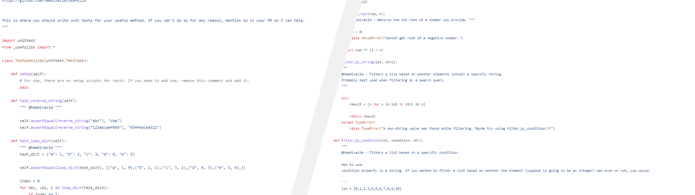
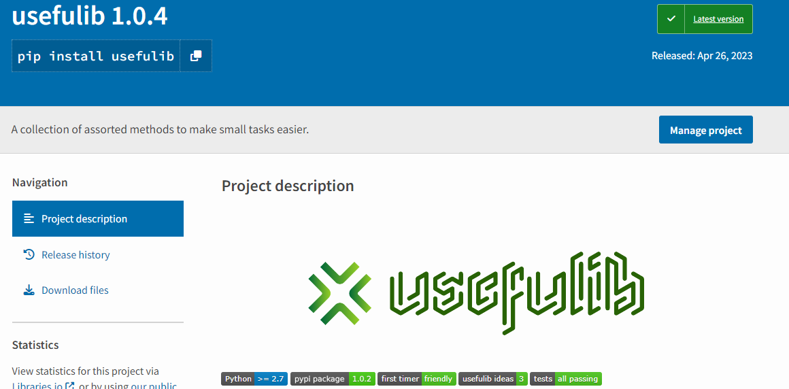

The open-source library for anything.
Filled with numerous functions to simplify anything, curated by the community.
usefulib was built with community and ease-of-use in mind.
It's very easy to contribute your own functions and even easier to install and use.

usefulib is regularly updated with new functions.
Every week, a new version of usefulib is published to the pypi page to reflect changes from the community.
